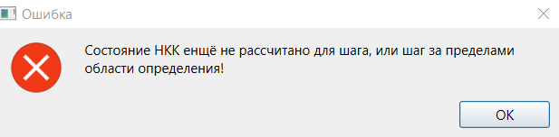

1. Симуляция НКК осуществляется на вкладке симуляции. Для перехода на эту вкладку с другой вкладки необходимо нажать на заголовок «Симуляция».
2. В левой части вкладки отображена интерактивная область графического представления НКК. Данная область всегда функционирует аналогично режиму редактирования значений элементов НКК вкладки построения НКК графическим методом. Работа с масштабом отображения осуществляется при помощи элементов интерфейса в нижнем правом углу.
3. Область в правой части вкладки позволяет задать параметры прогнозирования и симуляции НКК. В ходе прогнозирования НКК обязательно изменяются значения факторов. В дополнение, при выборе соответствующего алгоритма прогнозирования может осуществляться изменение связей. Прогнозирование может выполняться с использованием либо числовых, либо нечётких значений термов. Могут быть использованы следующие функции активации: бивалентная, тривалентная, порогово-линейная, сигмоида или гиперболический тангенс.
4. Условия завершения симуляции могут быть заданы в следующих форматах:
4.1. Прогнозирование на фиксированное число шагов.
4.2. Прогнозирование, до момента, пока в течение указанного числа шагов выбранная метрика оценки изменения состояния НКК не станет меньше, чем заданный порог.
5. При этом метрика изменения задаётся в любом случае. Это необходимо для того, чтобы программа могла отображать значение данной метрики на каждом шаге в нижнем правом углу.
6. Программа может производить симуляцию как в реальном времени, так и сразу выполнять переход к конечному состоянию в соответствии с настройками пользователя. В дополнение, перед симуляцией пользователь может задать число шагов в секунду, которое программа должна показывать.
7. Для запуска симуляции необходимо нажать на кнопку «Предсказать». В результате в ходе симуляции цвета факторов и, при соответствующем выбранном алгоритме, связей будут изменяться в соответствии с предсказанными значениями. В нижней части вкладки шкала прогресса отображает текущий шаг симуляции.
8. Для того, чтобы просмотреть изменение значений фактора в ходе прогнозирования необходимо нажать на него правой кнопкой мыши. В результате откроется вкладка результатов симуляции окна фактора, на которой представлен график изменения значения фактора относительно заданных значений термов. Аналогично могут быть просмотрены изменения значений для отдельной связи. Данные графики обновляются динамически в ходе симуляции.
9. В ходе симуляции может быть изменена её скорость. При нажатии на кнопку «Замедлить» скорость уменьшается в 2 раза. При нажатии кнопки «Ускорить» – увеличивается в 2 раза. Изменения скорости прогнозирования отображаются в соответствующем поле. Симуляция может быть остановлена при помощи кнопки «Пауза» и впоследствии запущена вновь при помощи той же кнопки уже с надписью «Запустить». После завершения симуляция ставится на паузу автоматически. При помощи кнопки «Завершить» пользователь может сразу перейти к последнему шагу симуляции, а при помощи кнопки «Отменить» - вернуться к начальному состоянию.
10. Если симуляция поставлена на паузу, может быть выполнен переход на указанное количество шагов в заданном направлении при помощи кнопок «Назад» и «Вперёд». В случае, если значения необходимого шага ещё не предсказаны, либо необходимый шаг находится за пределами диапазона возможных шагов, на которых в соответствии с условиями остановки выполняется прогнозирование, будет показано сообщение об ошибке, а переход выполнен не будет.

11. По завершении симуляции может быть осуществлён сброс в исходное состояние (до начала симуляции) при помощи кнопки «Сбросить». При этом в случае, если после начала симуляции параметры НКК были изменены, после сброса эти изменения появятся на интерактивной области.
12. Вкладка позволяет осуществлять редактирование заметок НКК аналогично вкладке настройки модели, при этом поле на вкладке настройки модели и поле на вкладке симуляции отображают одно и то же содержимое.